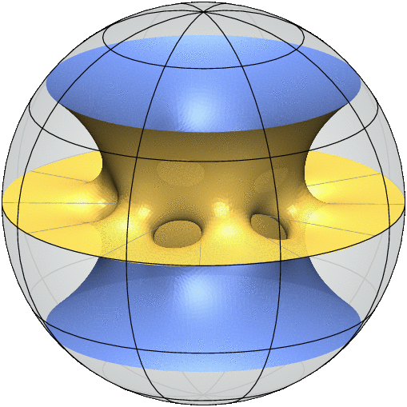
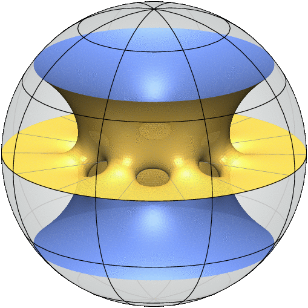
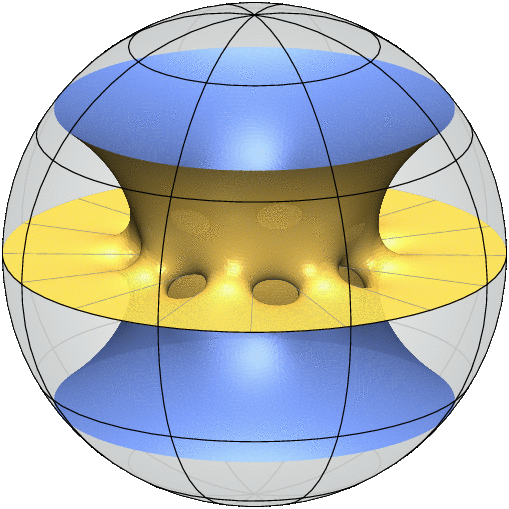
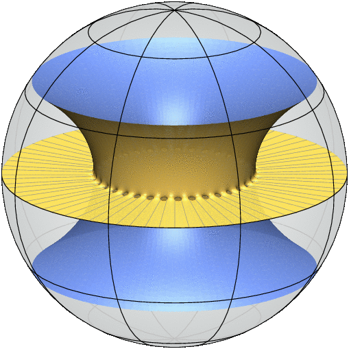

Free boundary minimal surfaces with three boundary components

genus = 2

genus = 3

genus = 4

genus = 5

genus = 6

genus = 7

genus = 35
References
- N. Kapouleas and M. Li, Free boundary minimal surfaces in the unit three-ball via desingularization of the critical catenoid and the equatorial disk, preprint (arXiv:1709.08556).
- D. Ketover, Free boundary minimal surfaces of unbounded genus, preprint (arXiv:1612.08691).